01
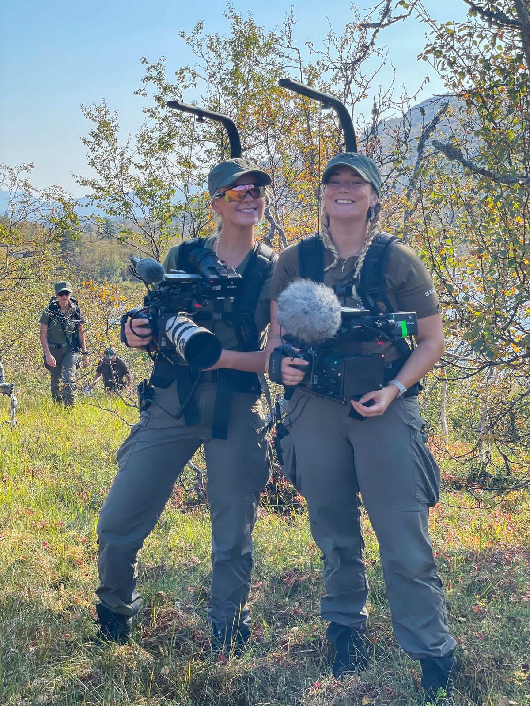
Film & TV
Fotoassistanse og produksjonsstøtte på serier, drama og underholdning — blant annet Kompani Lauritzen. Vant til team, tempo og lange dager på sett.
Se prosjekterFilosofien
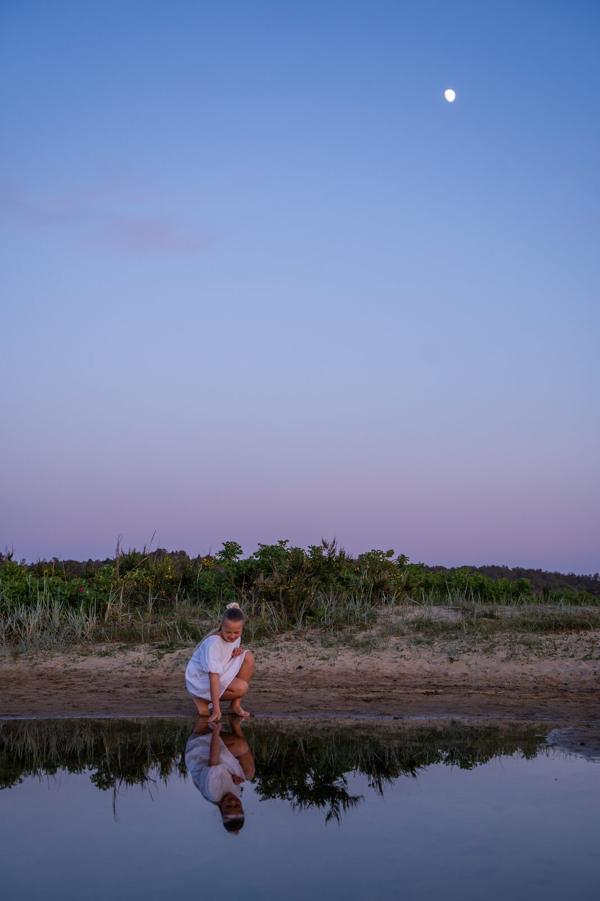
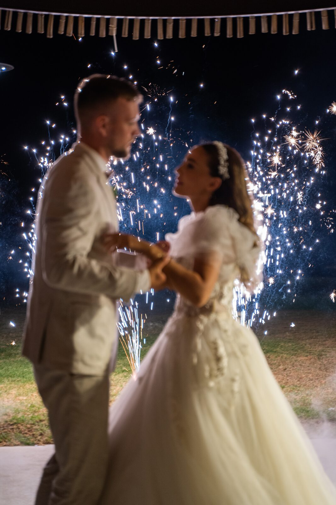
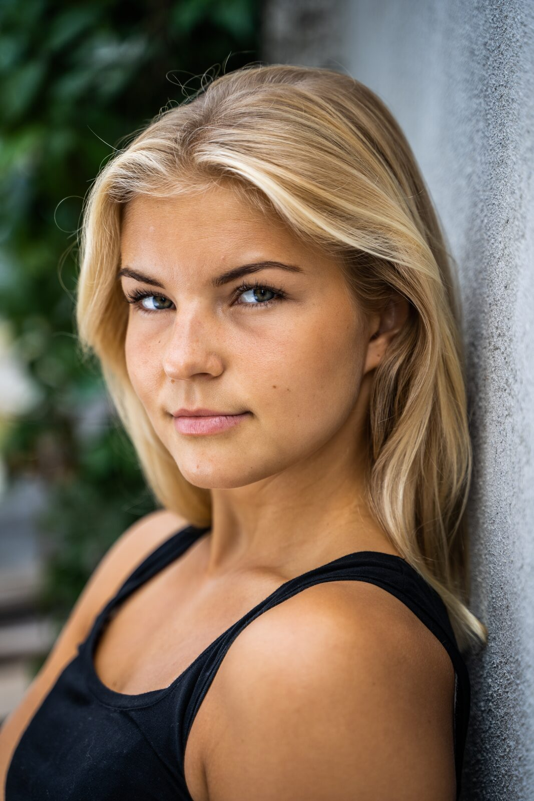
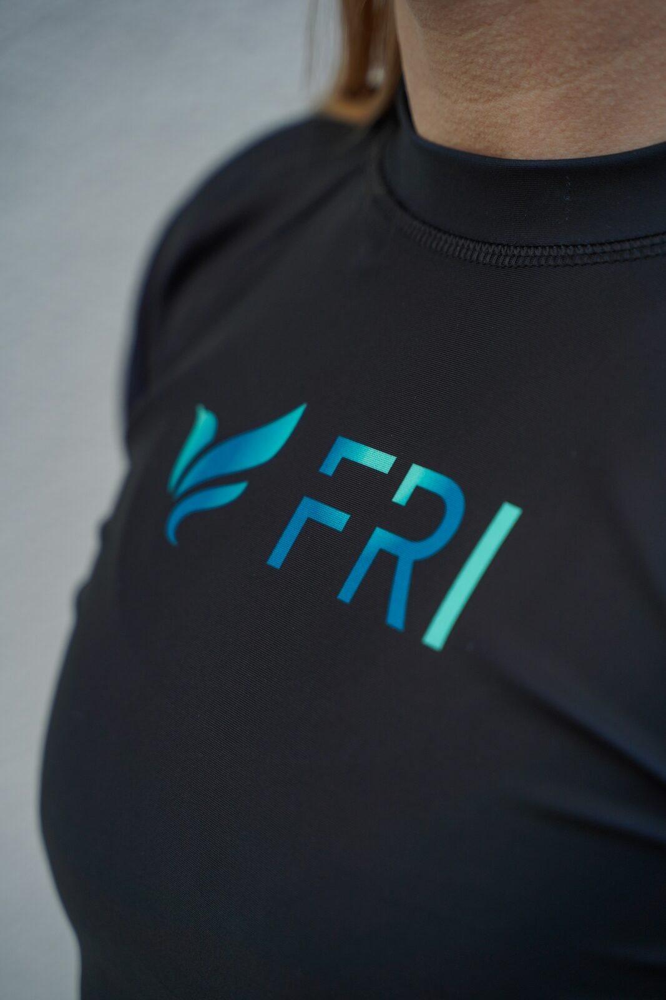
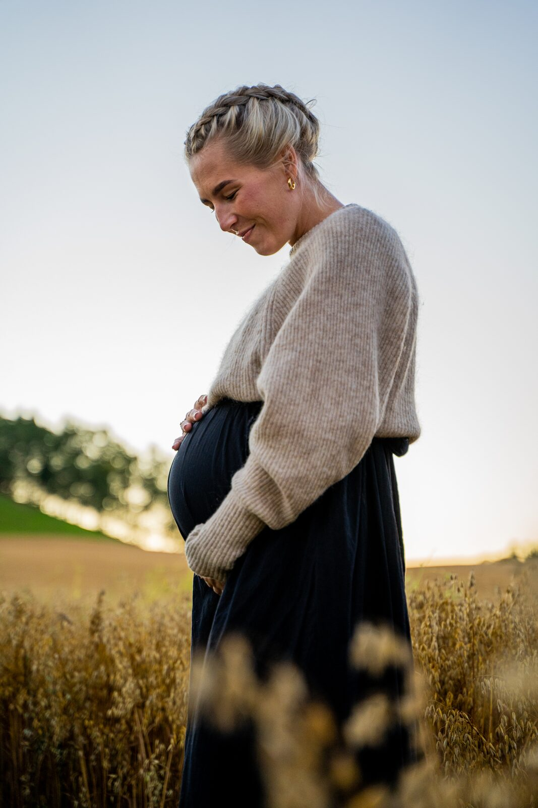
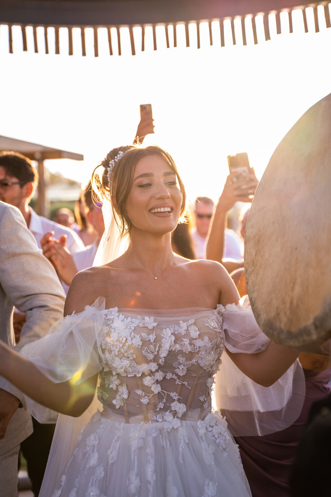
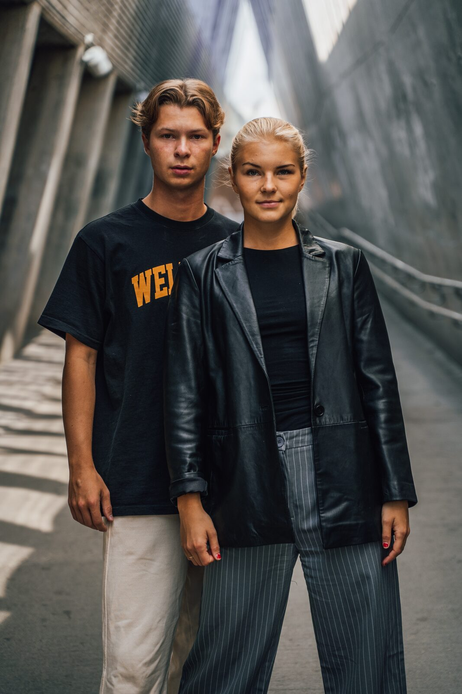
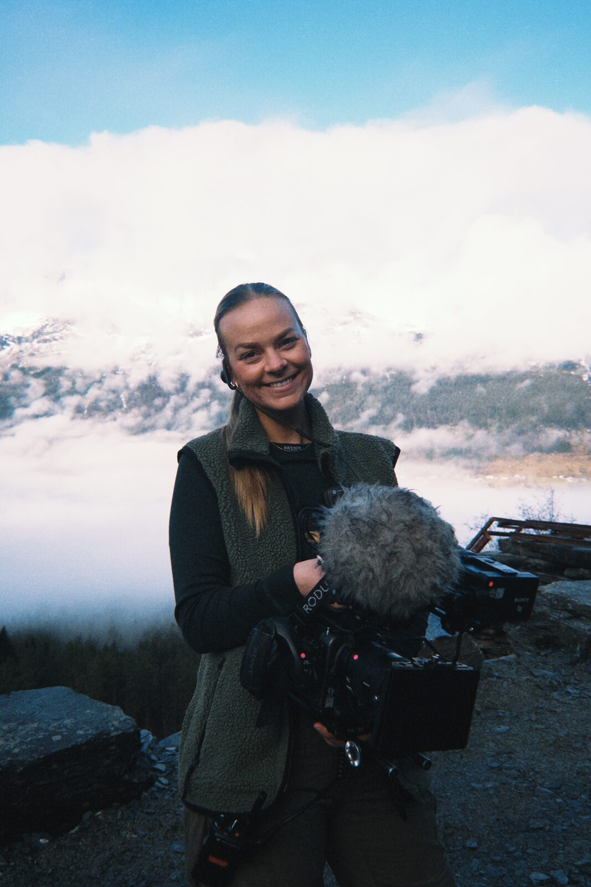
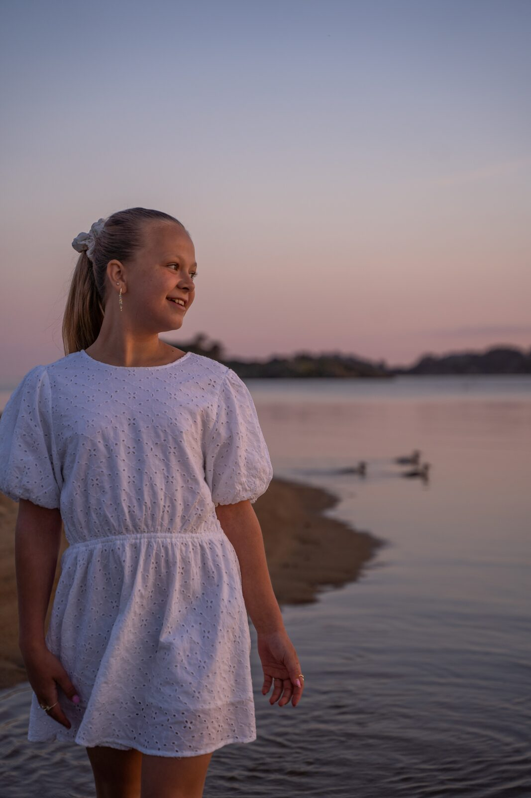
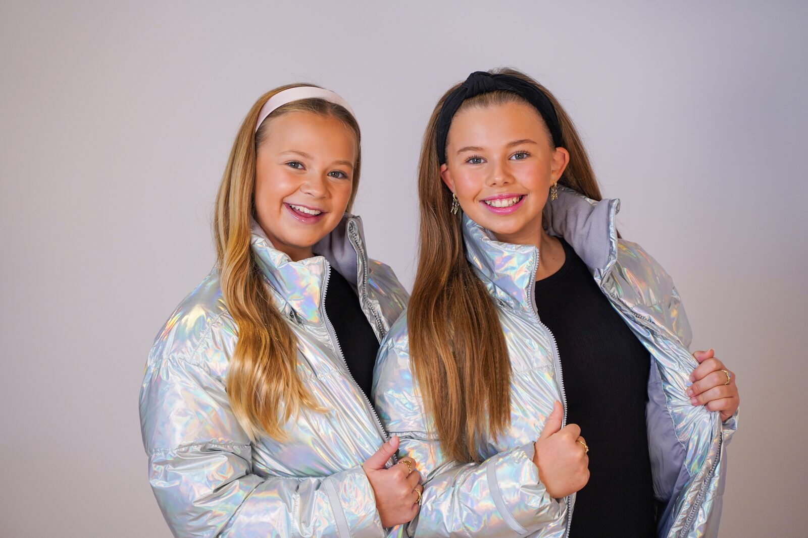
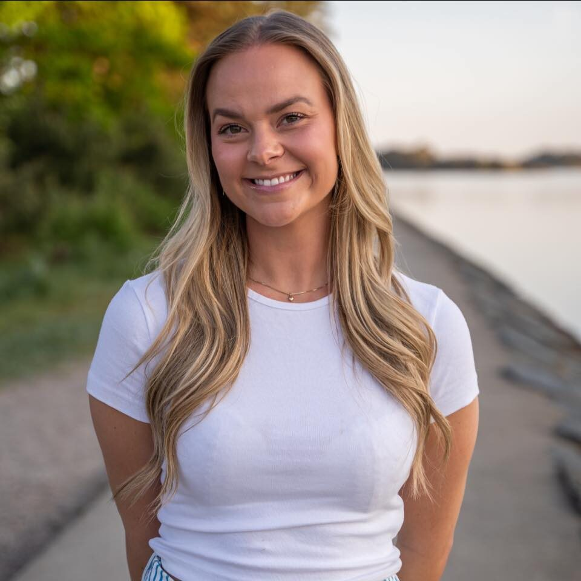
Bak kamera
Jeg er utdannet i film og TV fra Westerdals og basert i Kristiansand. Etter studiene har jeg jobbet freelance på film- og TV-produksjoner, samtidig som jeg har bygget opp egne prosjekter innen foto og video.
For meg handler godt innhold ikke bare om teknikk — men om mennesker, stemning og historiene som oppstår i øyeblikket.
Eline Ødegaard
Tjenester
Freelance innen film, foto og klipp — i team eller selvstendig. Hvert prosjekt får et tilbud tilpasset omfang og idé.

Fotoassistanse og produksjonsstøtte på serier, drama og underholdning — blant annet Kompani Lauritzen. Vant til team, tempo og lange dager på sett.
Se prosjekterPortrett, headshots, par og event. Naturlig lys og ekte uttrykk fremfor oppstilte positurer — for privatpersoner, merkevarer og redaksjon.
Se fotoFra idé til ferdig levering — kampanjefilm, bryllup og personlige minnefilmer med et filmatisk uttrykk, for deg som vil ha noe mer enn en mal.
Ta kontaktinmoment
Godt innhold handler ikke om teknikk — men om mennesker, stemning og historien i øyeblikket.
Galleri
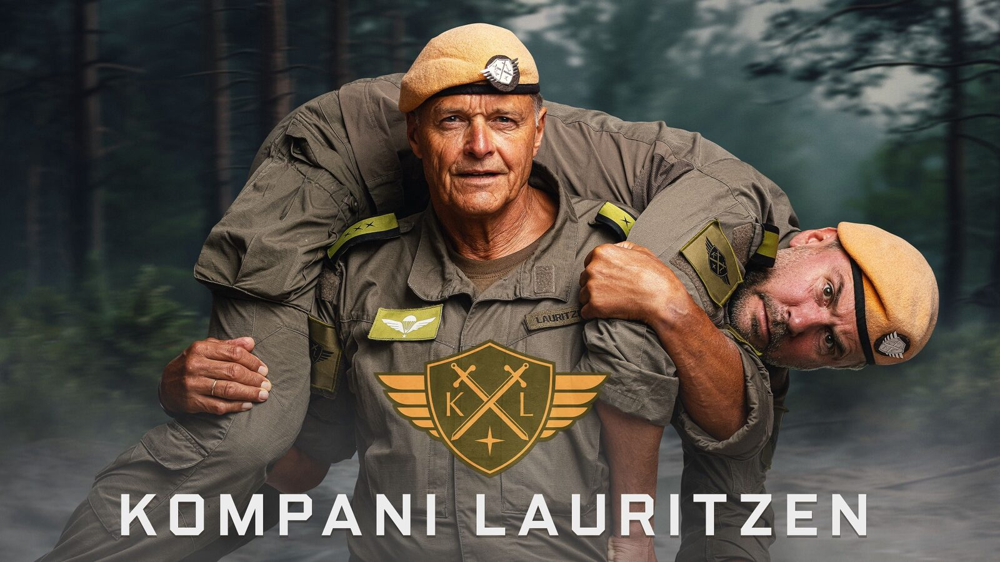
Eline har en unik evne til å se øyeblikkene som virkelig betyr noe. Hun skaper trygghet foran kamera, og resultatet er både teknisk solid og ekte i uttrykket.Oppdragsgiver — bryllupsfotografering
FAQ
Lurer du på noe annet? Send meg en melding — jeg svarer raskt.
Kontakt
Enten du planlegger en produksjon, trenger bilder til merkevaren eller ønsker en personlig minnefilm — ta kontakt, så finner vi ut hva som passer.